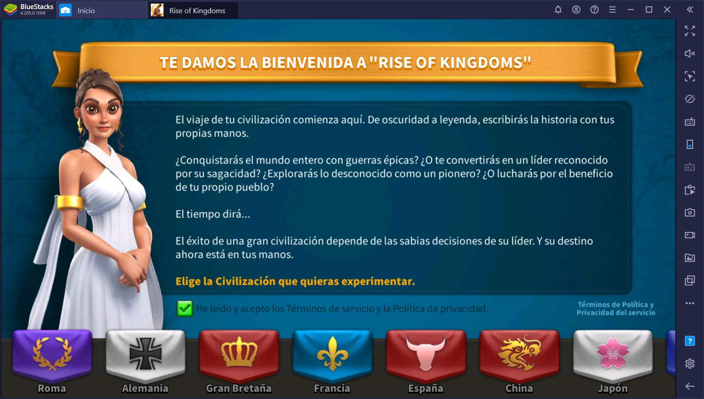

GUIA dentro del JUEGO:

Este es el metodo de eleccion de civilizacion dentro del juego. Cada civilizacion tiene sus beneficios, mejoras de exploracion, economia, etc.
Este es el metodo de eleccion de civilizacion dentro del juego. Cada civilizacion tiene sus beneficios, mejoras de exploracion, economia, etc.
Conquista con Grecia y álzate con la grandeza ▶Presentamos una nueva civilización en Rise of Kingdoms: ¡Grecia! ◀ Grecia ha entrado al escenario de Rise of Kingdoms. El poder del mundo helenístico, cimiento de la civilización occidental y cuna de filósofos, guerreros y poetas legendarios, está ahora a tu alcance: LOS GRIEGOS. Valientes, reflexivos, artísticos e innovadores, los antiguos griegos son famosos por sus impresionantes maravillas arquitectónicas, como el Partenón, así como por su papel de pioneros en la política, las artes, la filosofía y la guerra. ¿Cómo aprovecharás la multitud de recursos y la destreza intelectual que tienes a tu disposición? ¿Conducirás Grecia como en la edad dorada de Pericles, fomentando la democracia y erigiendo obras maestras de la arquitectura? ¿O exhibirás tu poderío militar como Alejandro Magno?